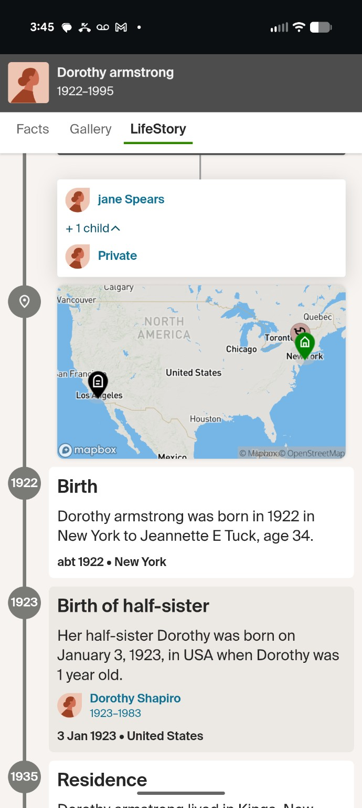
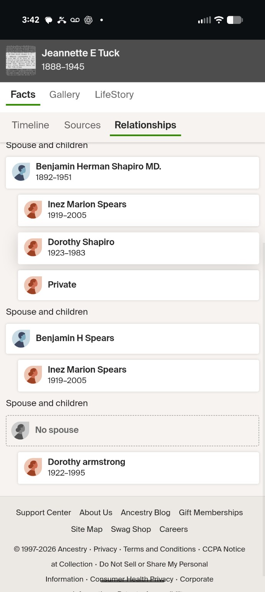
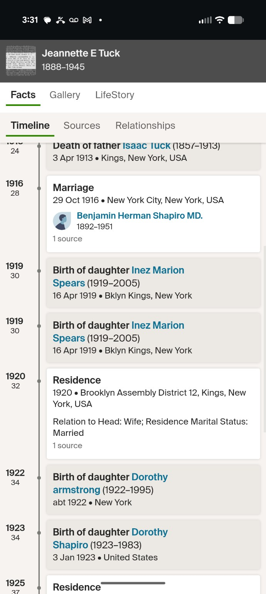

Jewish or Jew-ish? · Part 1 of 6
The Family Story I Finally Decided to Investigate
I grew up hearing that there was Jewish heritage on my mother’s side of the family. My mom had talked about it, and the story went back through her mother. For years, it was something I knew about my background without really knowing the details.
Recently, I started wondering whether I had been treating an important part of my own identity as a piece of family trivia.
Was I Jewish? Did I have Jewish ancestry without being Jewish myself? Or was I, for lack of a better word, Jew-ish?
A conversation at a synagogue in Rancho Santa Fe turned that question into a search. And the search brought me back to my great-grandmother, Dorothy Armstrong.
What made me start asking
I had been noticing younger Jews in the business community openly embracing their heritage. They were wrapping tefillin, getting together, and making time for traditions that connected them to something beyond their day-to-day work.
What stood out to me was that their connection wasn’t just something they mentioned when somebody asked about their background. They were doing something with it. They were paying homage to where they came from, and they seemed proud to make that part of their lives visible.
That inspired me to look at my own family story differently. I had grown up hearing about a Jewish connection. But what did I actually know about it? Who in my family was Jewish? How had that connection reached me?
I wanted to stop repeating the story and start understanding it.
The conversation that changed the question
I went to the Chabad Jewish Center of RSF and spoke with Rabbi Levi Raskin. source
He explained the maternal-line requirement as understood in Orthodox Jewish law: Jewish status by birth passes through the mother. That meant “somewhere on my mom’s side” wasn’t specific enough. I needed to understand the direct line from mother to daughter. source
Conversion is another path to becoming Jewish, but the question I was investigating was whether I was already Jewish by birth. source
I had been thinking about ancestry in the broad sense. The rabbi’s explanation made me focus on a much more specific question: Was my mother’s mother’s mother Jewish?
That was no longer a vague question about my background. It was a question about an actual person whose history I could try to trace.
The woman at the center of it
The line I needed to follow began with me, then my mother, then my maternal grandmother Pamela, then my great-grandmother Dorothy Armstrong.
My mother also confirmed that Spears and Armstrong were names associated with Dorothy. That gave me something concrete to work with, but it also meant I needed to pay attention to names that changed across records.
The Ancestry profile I was examining listed Dorothy Armstrong as 1922–1995. It was a starting point, not a verdict.

Knowing her name and seeing her in a tree did not tell me whether she was Jewish. That was the part I still needed to establish.
Then the names stopped lining up neatly
A name that caught my attention was Benjamin Herman Shapiro. My immediate reaction was that Shapiro sounded consistent with the Jewish family history I had always heard about.
But an interesting surname was not the answer to the question I had brought home from the synagogue.
One Ancestry relationships screen listed Jeannette E Tuck alongside Benjamin Herman Shapiro, Benjamin H Spears, Dorothy Shapiro, and Dorothy Armstrong. The two Dorothy profiles had different dates.

I had already needed to correct which Dorothy we were discussing during the research. My great-grandmother was Dorothy Armstrong. I couldn’t let another Dorothy’s records quietly become hers just because a name looked promising.
I was using ChatGPT to help work through the information, but a confident explanation was not a substitute for checking the original records. I needed to know what the documents actually said, not just whether the proposed family connection sounded plausible.
One question became another
Another screenshot showed Jeannette’s timeline, with entries for both Dorothy Armstrong and Dorothy Shapiro. That made the next step clearer: I needed to verify Dorothy’s relationship to Jeannette, not simply accept the connection displayed in the tree.

If Jeannette was Dorothy’s mother, then understanding her background could be essential to understanding Dorothy’s. Finding a Jewish ancestor elsewhere in the family would still matter to my heritage, but it would not automatically settle the direct maternal-line question. source
At this stage, I did not have a confirmed answer. I had a family story, a conversation with a rabbi, and several names that needed to be connected carefully.
This six-part series follows that search: what I found, what I initially misunderstood, and what the evidence can and cannot establish.
The name that first caught my attention was Shapiro. But the person I needed to understand was Dorothy. And to understand Dorothy, I was going to have to find out about her mother.
Next in Part 2: The Shapiro clue, the Spears surname, and the problem of two Dorothys.